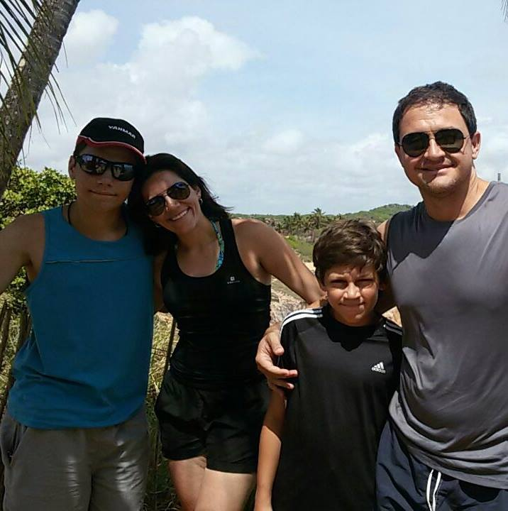
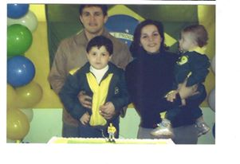
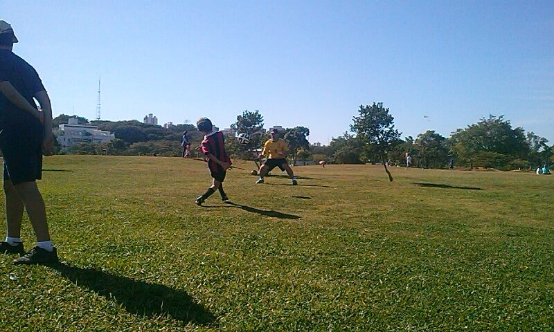
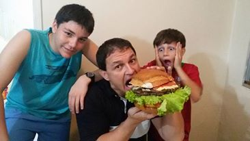
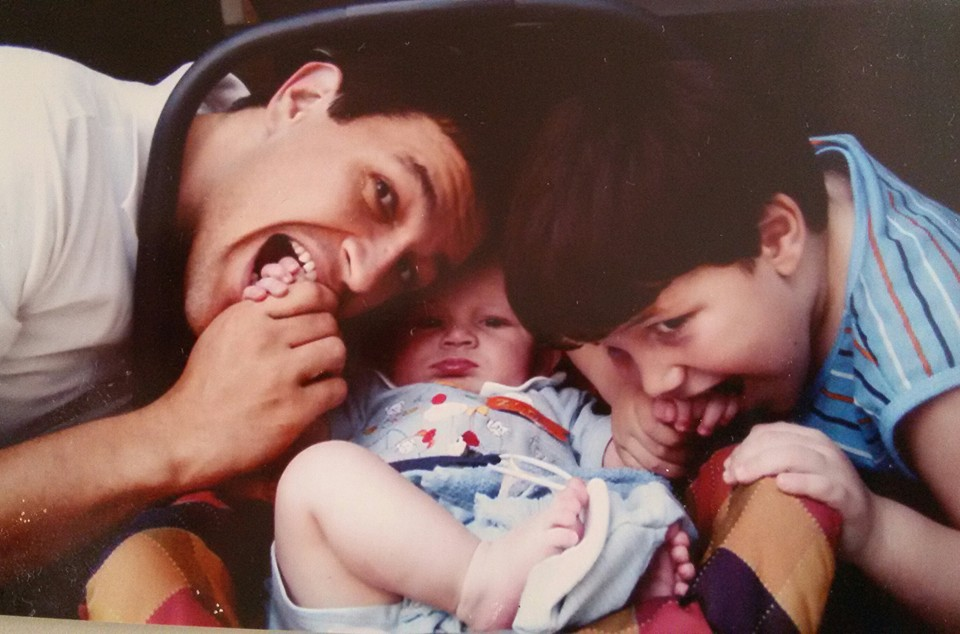
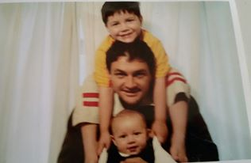
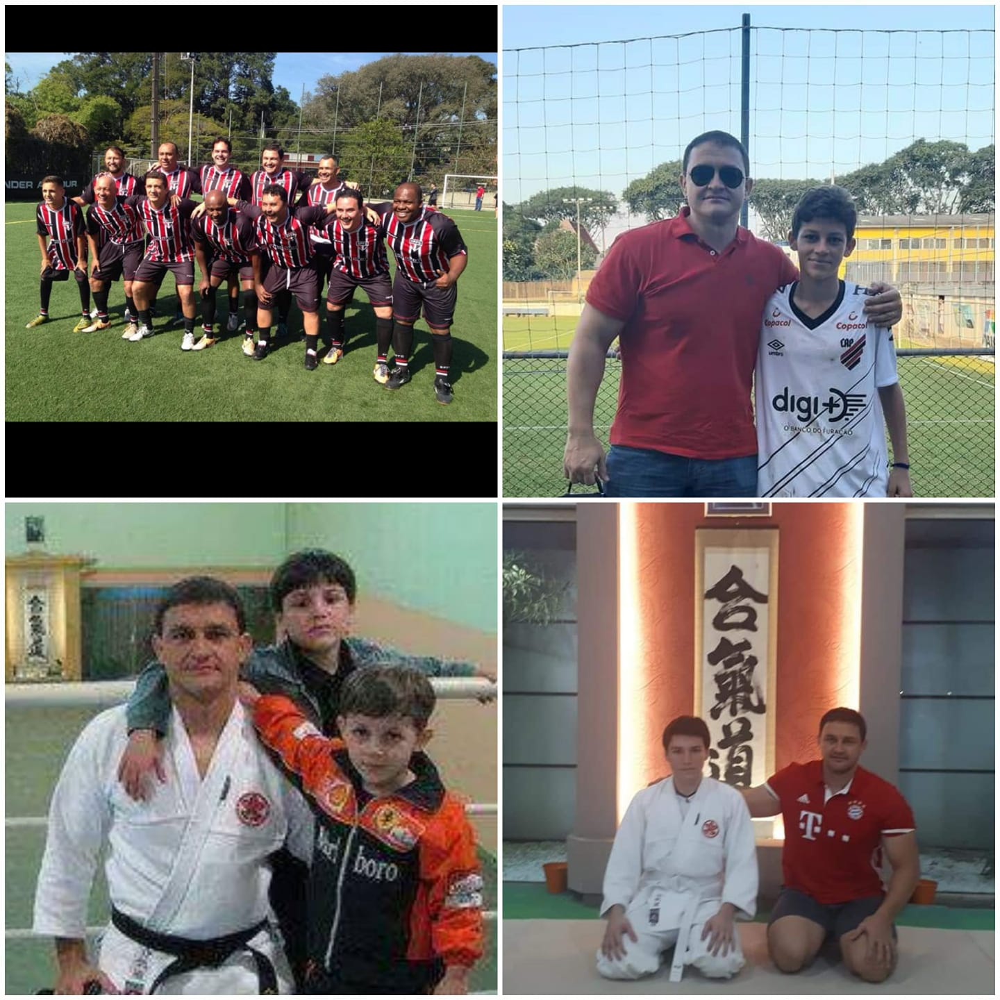

Pai muito obrigado por tudo que você fez por nós, todos os sacrificios, cuidados e toda a preocupação que você sempre teve com a gente. Sempre "Prevendo o futuro" quando vamos sair de casa, sempre rodando e processando todos os perigos e falhas que podemos ter em nosso caminho. Sempre cuidando da mamãe, do teteu e de mim.
Sempre cuidando da nossa educação e do nosso caráter, me levando ao Aikido, para a escola, só para eu não precisar pegar ônibus e facilitar ao máximo minha vida, usando sempre a meritocrácia que é seu lema. Me ensinou muito sobre o mundo e sobre como a Harmonia (o AI do Aikido) é fundamental em tudo que existe "Nem tanto a terra, nem tanto ao mar". Além de sempre levar o teteu para jogar bola, para lá e para cá, treinando, orientando, mostrando, explicando, e sempre se preocupando com sua alimentação. Usando seu tempo e esforço para fazer a carreira dele alavancar. Nunca se esqueça que quando o Matheus aparecer na televisão cantando o hino nacional, você é o principal motivo disso.
Mesmo eu longe, cuida de mim e preve o futuro com precisão.
Quando eu me tornar pai, eu sinceramente, quero ser tão bom quanto o senhor foi e é com a gente.
Obrigado por tudo que você fez e faz por nós até hoje!!!







Assistir o video em tela cheia
Obs: Desculpa a qualidade do video e do site, estou aprendendo a mexer com isso ainda, fiquei esperando a faculdade ensinar nessas duas semanas para eu poder começar a fazer seu site, mas como era só aula inaugural não teve matéria direito. Tentei me esforçar o maximo para aprender as coisas de ultima hora e poder criar o site. Espero que tenha gostado, esse foi meu primeiro site.